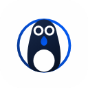
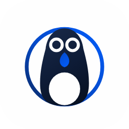
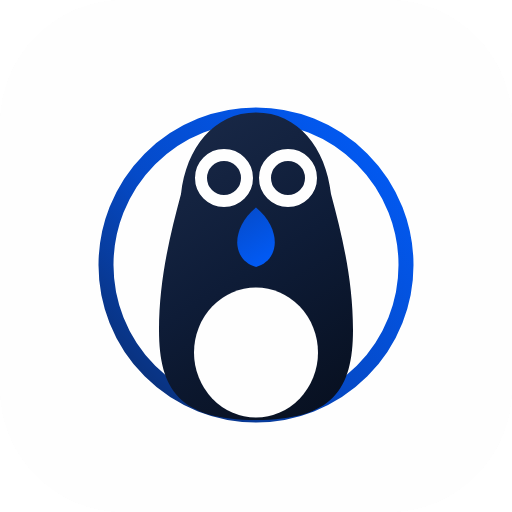
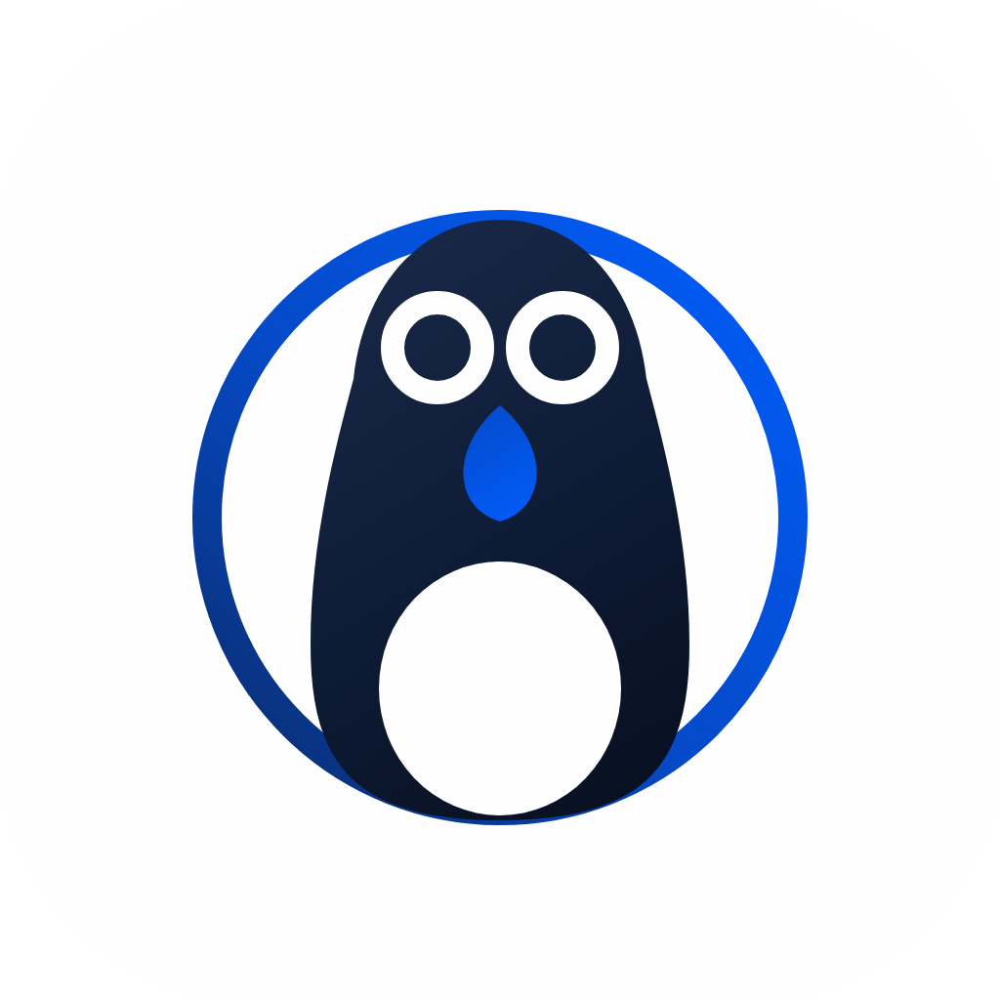
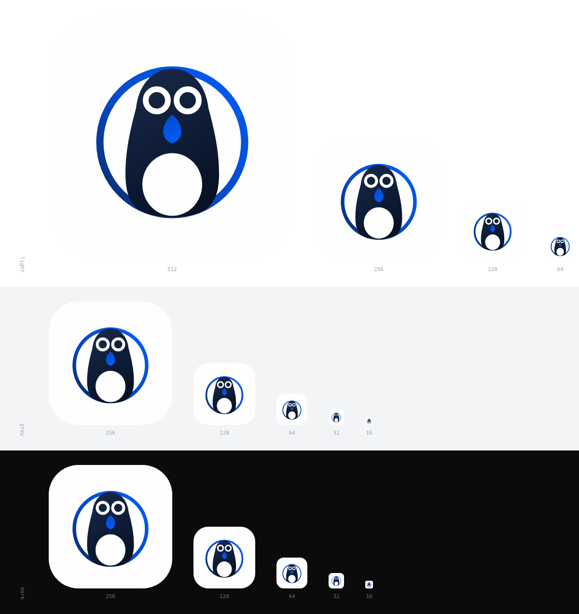
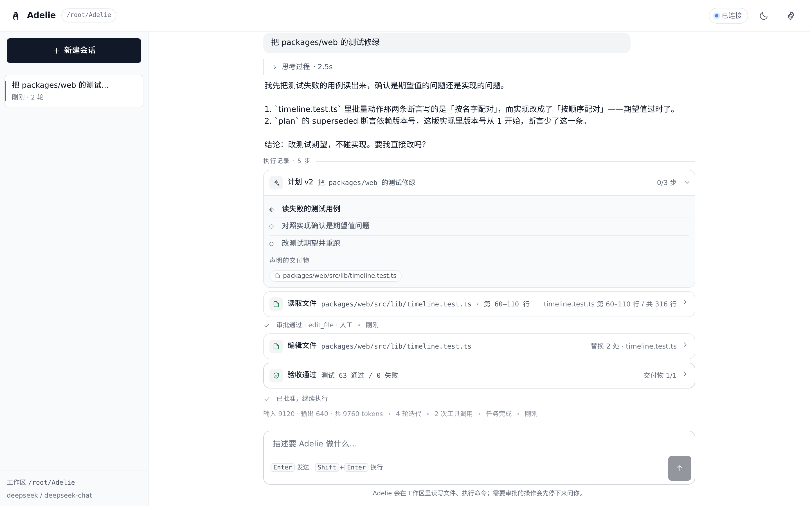
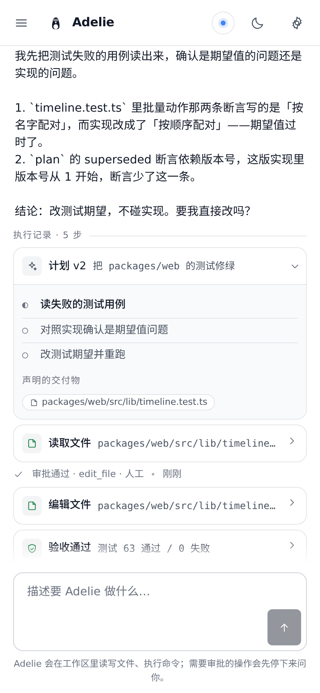
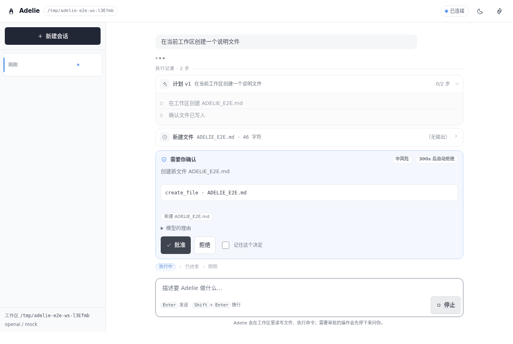
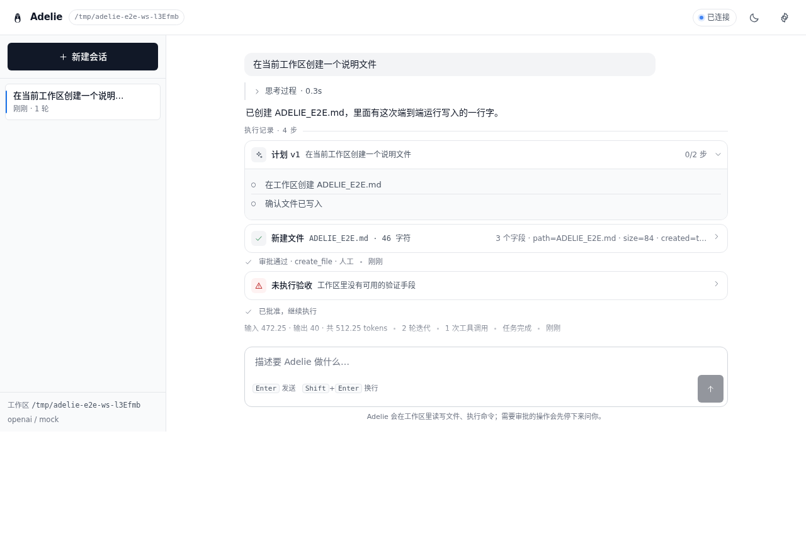
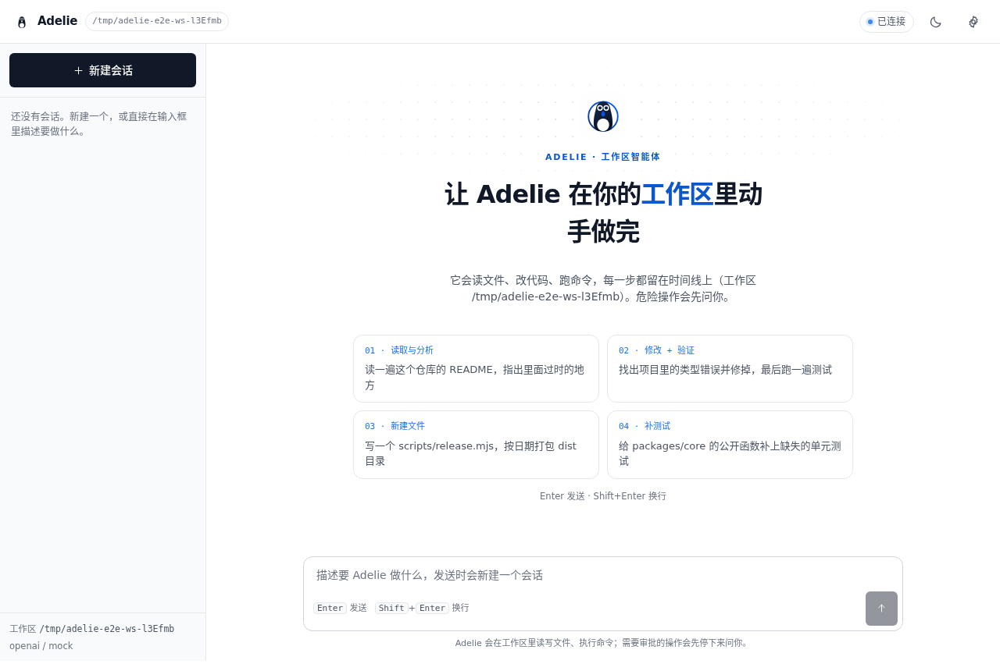

Adelie
CLI、Windows 桌面、Web 与可安装的 PWA —— 四张脸，同一套引擎。引擎干活、外壳呈现、接口是唯一的接缝；一轮任务的每一步都写成事件，界面与「接着聊」都由事件回放重建。界面照 GitHub 式的克制来做：实底、1px 发丝边框、系统字体、只留一个蓝色强调。
为什么是 Adelie
阿德利企鹅：全黑的后背和头、白肚子，以及眼睛周围那圈白环。那是它独一无二的标记，也是这个标志唯一的「签名」。
一家人，不是同一只
PenguinHarness 是缰绳，Adelie 是坐在缰绳里那只企鹅：同一套企鹅视觉、同一个蓝，但它是一只具体、有名字的企鹅。
能当命令名
6 个字母、无连字符、无重音（法语的 Adélie 重音不进入标识符），adelie 一次就能敲对。
占用干净
npm 的 adelie 与六个 adelie-* 包名、GitHub 的 lmliheng/Adelie 在立项当天都还是空的。
| 备选 | 说明 | 占用 |
|---|---|---|
| Korora | 小蓝企鹅的毛利语名，最短的企鹅名之一 | 可用 |
| Rockhopper | 跳岩企鹅，头像辨识度高（黄眉） | npm 已占用 |
| Krill | 磷虾，企鹅的食物；短、好念，但不像「一只企鹅」 | npm 已占用 |
| Gentoo | 巴布亚企鹅 | 与 Linux 发行版同名 |
构成：一块板、一道轨道、一只企鹅
白底圆角方是 PenguinHarness 用来放企鹅的那块板；蓝色轨道是缰绳那道扫线，换成「绕在智能体外面的一圈」；企鹅站在轨道里，只露出左右两段弧。
| 部件 | 几何 | 为什么 |
|---|---|---|
| 板 | 1024 × 1024，圆角 246（24%） | 与 PenguinHarness 的 954 / 圆角 230 同比例，两个图标并排是同一族的形状语言 |
| 轨道 | 圆心 (512,530)，r 300，线宽 30 | 画在企鹅底下，只露出左右两段弧 —— 缰绳那道蓝色扫线，换成了「绕在智能体外面的一圈」 |
| 企鹅 | x 318–706，y 225–840（388 × 615） | 保龄球瓶式剪影，占画面 60%，四周留白足够，任何尺寸都不贴边 |
| 眼环 | r 46、stroke 24，圆心 (448,356) · (576,356) | 物种特征，也是整个图标里最小仍然可辨的元素 |
| 喙 | 蓝色水滴，落在两眼之间偏下 | 把「动作」交给品牌蓝，和轨道同一族 |
尺寸阶梯与小尺寸自查
下面每一枚都按真实像素渲染，缩放看它们在托盘、任务栏、窗口和商店里的样子。



512 × 512freedesktop 组

icon.png 1024由此出 .ico / .icns
16/32/48/64/128/256 六帧
继承 currentColor
小尺寸表现
256 / 128 / 64：企鹅、眼环、喙都清楚。
32：眼环收成两个白点，白肚子仍在 —— 仍然是一只企鹅。
16：只剩深色剪影加白肚子，作为托盘 / 任务栏尺寸可用。
单色字形
肚子、喙、眼环用 mask 从剪影里挖空，一种墨色就够。给导航栏、终端标题、favicon 用。
注意：currentColor 只在 SVG 被内联进文档时才继承文字颜色；用 <img src> 引用会渲染成黑色。

两个颜色家族，零种新色
深蓝是身体，品牌蓝是「动作」（轨道、喙），白是留白与眼环。全部取自 PenguinHarness 的标志。
界面上的蓝（--brand-*）
| 语义令牌 | 浅色 | 深色 | 用在哪 |
|---|---|---|---|
| --bg / --surface | #ffffff | #000000 / #0d0d0d | 深色是纯黑，不是深蓝 |
| --fg / --fg-muted | #111827 / #4b5563 | #f3f4f6 / #9ca3af | 正文与次级文字 |
| --border | #e5e7eb | #1f1f1f | 1px 发丝边框，不用阴影分层 |
| --accent-bg | #111827 | #f3f4f6 | 主按钮：近黑，深色下反白 |
| --brand-600 / 700 | #1a73e8 / #0b57d0 | #8ab4f8 | 只给链接、数值、状态点 |
| --ok / --warn / --danger | #15803d / #b45309 / #b91c1c | #4ade80 / #fbbf24 / #f87171 | 验收通过 / 待确认 / 失败 |
排版、圆角、动效 —— 规矩越少越像一套
字体阶梯
系统字体栈，不下载任何 webfont：ui-sans-serif, system-ui, …, PingFang SC, Microsoft YaHei。
圆角只有两个
动效一条缓动
cubic-bezier(.2,.7,.3,1)，120–280ms，hover 只改颜色，不做位移与缩放；尊重 prefers-reduced-motion。
布局常量
顶栏 56px，侧栏 264px；移动优先，基础样式就是手机单列，宽屏用 min-width 查询加列。
四张脸，同一套引擎
引擎（core / providers / tools / runtime）自己拥有；外壳一律通过 HTTP + SSE 契约说话，所以四种形态长得一样、行为一样。
CLI npm i -g adelie
$ adelie "把 README 里的错别字改掉"
$ adelie --task "跑测试并总结失败" --yes --output-format json
$ adelie serve --host 0.0.0.0Windows 桌面 Electron
Adelie-Setup-0.1.0-x64.exe
Adelie-Portable-0.1.0-x64.exeWeb React + Vite
adelie serve # 打开 http://127.0.0.1:7370手机 PWA 同一份产物
Adelie 后端已就绪：http://192.168.1.9:7370/?token=…




引擎干活，外壳呈现，接口是唯一的接缝
Adelie 只有一条主线：引擎不依赖任何外壳，外壳不实现任何业务。CLI 与服务端是驱动同一个运行时的两个调用方 —— 构造 AgentRuntime（注入 onSessionEvent / onStreamDelta / requestApproval），调 run(task)，把事件写到终端或推成 SSE。审批、预算、验收、工具集这些语义只在引擎里存在一处。
| 谁拥有 | 内容 | 为什么放在这一侧 |
|---|---|---|
| 引擎 | ReAct 循环、计划与重规划、审批语义、验收、预算闸门、工具集、模型适配、事件流格式、会话持久化 | 这些语义只能存在一处，否则四端会各自漂移出一套「什么算完成」 |
| 外壳 | 呈现与交互：终端渲染、SSE 推送、页面与 PWA、桌面窗口与端口管理 | 外壳随时可以重写、可以再多一个，而引擎不知道它们存在 |
| 接缝 | docs/api.md 里那份 HTTP + SSE 契约 | 它是唯一的跨进程约定：改接口先改契约，再改两端 |
八个包，一个职责
| 包 | 行数 | 职责 |
|---|---|---|
| adelie-core | 3290 | 类型、事件流与落盘、会话持久化 / 恢复 / 导出、上下文折叠、交付物断言、输出预算（零依赖） |
| adelie-providers | 737 | 模型适配层：DeepSeek 与任何 OpenAI 兼容端点，流式增量与工具调用 |
| adelie-tools | 4570 | 文件 / Git / 命令 / 搜索工具与注册表、fs-guard 边界、MCP stdio 客户端 |
| adelie-runtime | 2389 | ReAct 主循环、计划与真 replan、审批闸门、验收、多重预算与成本闸门 |
| adelie-server | 1661 | HTTP + SSE 后端：会话列表、对话流、审批往返、取消、Web 产物托管 |
| adelie | 2370 | CLI：交互会话与 headless 三种输出形态，外加 adelie serve |
| adelie-web | 4863 | React + Vite 界面与 PWA：时间线、工具卡、审批卡、设置、用量 |
| adelie-desktop | 394 | Electron 壳：挑端口、fork 内置服务端、单实例、优雅退出 |
数据放在哪
用户级配置（API Key）：~/.adelie/.env
会话事件（JSONL，按工作区索引）：~/.adelie/sessions/，可用 ADELIE_SESSIONS_ROOT 覆盖
桌面壳的数据与日志：系统 userData 下的 Adelie/
工作区指令：工作区根的 ADELIE.md / AGENTS.md / CLAUDE.md
安全边界
工具只能在工作区内动文件，所有文件工具过 fs-guard（resolve + realpath + relative 判定，拒 .. 逃逸与符号链接）。
需要审批的动作（写文件、跑命令、网络请求）默认拒绝；有人可问时由人拍板，决定写进事件流。
服务端默认只绑回环；绑非回环或显式设了令牌时，/api/* 必须带凭证。
桌面壳只绑回环，且不给页面注入 Node（nodeIntegration: false、sandbox: true）。
一轮任务怎么跑
运行时是一个 ReAct 循环：每一轮先构建上下文、让模型决策，再把决策变成动作或答复。动作要过审批闸门、执行要过 fs-guard、每轮开头要过预算闸门；跑完做一次验收。所有状态迁移都写成事件，界面与「接着聊」都由事件回放重建。
| 一步 | 做什么 | 写进事件流 |
|---|---|---|
| 0 · 起手 | 建运行状态，先把「要做什么」记下来，再让模型出一版初始计划 | task_started |
| 1 · 组装上下文 | 工作区指令 + 计划 + 交付物清单 + 历史（超过阈值就折叠成摘要） | context_folded |
| 2 · 模型决策 | 带上工具 schema 问模型；这一轮的正文/思考增量原样转给界面 | —（增量不是状态迁移） |
| 3 · 记录决策 | 动作执行之前落盘：它是「我打算做什么」的意图记录，崩溃时留下的半条记录由恢复流程修补 | decision |
| 4 · 审批 | 需要审批的动作停下来问人；无人可问时按策略（默认拒绝）；超时按拒绝处理 | approval |
| 5 · 执行与观察 | 过 fs-guard 执行，结果变成观察；失败的观察会带回重规划的机会 | observation |
| 6 · 计划变更 | 模型要求重规划时更新计划；跨轮的计划也由它落盘 | plan_updated |
| 7 · 收尾 | 先验收（交付物断言 + 验收命令），再写汇总；汇总与重放结果互为校验 | verification | → stopped
五个预算闸门
迭代次数 maxIterations
累计 token maxTokens（成本闸门）
工具调用 maxToolCalls
文件变更 maxFileChanges
「成功但无进展」noProgressLimit
为什么会停
task_completed · 正常做完
max_iterations / max_tool_calls / max_tokens / max_file_changes · 撞到闸门
no_progress · 同一个工具反复产出同样的结果
timeout · 超时
user_interrupted · 人打断
error · 执行出错
事件流是唯一事实源
一次会话就是一个 JSONL 文件，一行一次状态迁移，八种：task_started / decision / observation / approval / plan_updated / context_folded / stopped / verification。
界面、「接着聊」、会话导出都由它回放重建。
为什么增量不进事件流
模型的流式增量可能半截。事件流是事实源，一份可能半截的中间产物混进去，重放就不再等于真相。所以增量走 onStreamDelta 直接推给界面，事件流只收「已经发生的状态迁移」。
「接着聊」不等于「接着跑」
恢复会话时，历史 run 只影响上下文怎么构造：计划、预算计数、失败历史全部从零开始。旧日志仍然完整，变的只是送进模型的那一份 —— 上下文折叠会单列成 context_folded 事件，否则「模型怎么忘了前面读过的文件」这个问题只看决策与观察是答不出来的。
打一个 tag，出四件产物
发布是自动的，人只做两件事：改版本号、推 tag。剩下的由 .github/workflows/release.yml 跑 —— 先守门，再并行出三份产物，最后汇总成一个 Release。
四件产物
CLI —— npm 上的 @lmliheng/adelie
Windows 桌面 —— 安装版与免安装版各一个 exe
Web —— 静态产物 zip，丢到任意静态服务器就能跑
手机 PWA —— 同一份 Web 产物发到 GitHub Pages，手机打开后添加到主屏幕
要在仓库里配的东西
NPM_TOKEN（Secret）—— 不配就打印一行「未配置，跳过 npm 发布」并继续，其余产物照发
ADELIE_DEPLOY_PAGES=true（Variable）+ Pages 的 Source 设成 GitHub Actions —— 不配就只留 zip 附件
两个都不配也能发：产物是分批的，缺谁都不影响另外两件。
使用规则
要
- 托盘 / favicon 用 16px 的单色字形；应用图标不小于 32px。
- 四周留白不小于图画宽度的 12%（主标志已经留好）。
- 深色界面用主标志 —— 白板自带对比。
- 圆角由 SVG 自带，宿主不要再套一层。
不要
- 不换色、不加描边、不加阴影、不旋转。
- 不给白板改色，也不要在白板上再垫一层背景。
- 不要把主体裁出板外，或让图形贴边。
- 不要给同一个界面加第二个强调色 —— 品牌蓝只用在链接、数值、状态点。
文件与出处
| 文件 | 内容 |
|---|---|
| brand/adelie-icon.svg | 主标志（含底板），改图标只改这一个文件 |
| brand/adelie-glyph.svg | 单色字形，继承 currentColor |
| brand/render-icons.mjs | 由主标志生成全部位图（含手写 ICO 容器） |
| brand/icons/* | 1024 / 512 / 256 / 128 / 64 / 48 / 32 / 16 与 adelie.ico |
| packages/web/src/styles/global.css | 界面令牌的唯一出处（这一页的样式抄的就是它） |
| docs/api.md | 四端共用的 HTTP + SSE 契约 |
| docs/architecture.md | 引擎与外壳的分工 |